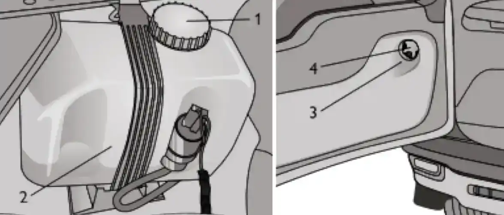

ТЕХНИЧЕСКОЕ ОБСЛУЖИВАНИЕ И ТЕКУЩИЙ РЕМОНТ АВТОМОБИЛЯ
Омывающая жидкость
омывательстеклоомывательвода
В бачок омывателей ветрового стекла и фар, а также в бачок омывателя стекла двери задка рекомендуем заливать смесь воды и специальной стеклоомывающей жидкости в пропорции, указанной на её упаковке. В теплое время года допускается использовать чистую воду.

Перед очередной доливкой жидкости в бачок омывателя ветрового стекла и фар проверьте и, в случае загрязнения, очистите сетку фильтра под крышкой. Бачок омывателя заднего стекла расположен за обивкой двери задка и сверху закрывается крышкой.